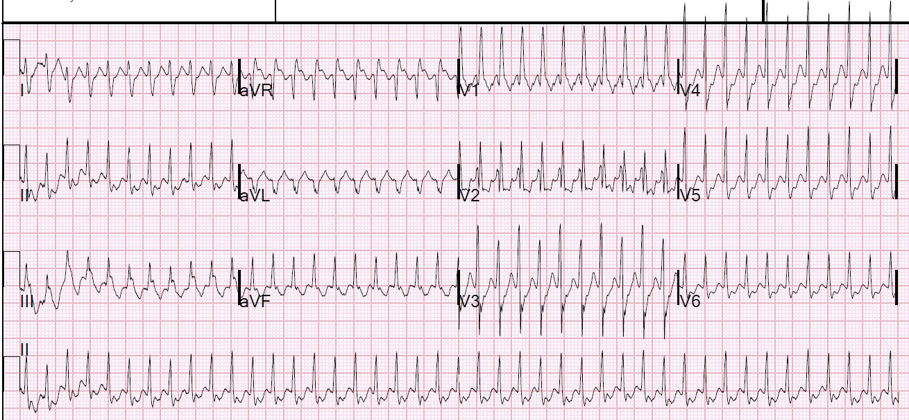
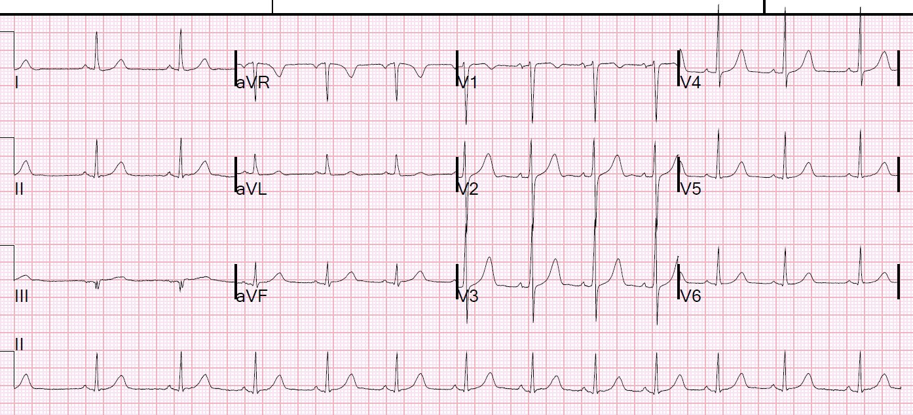
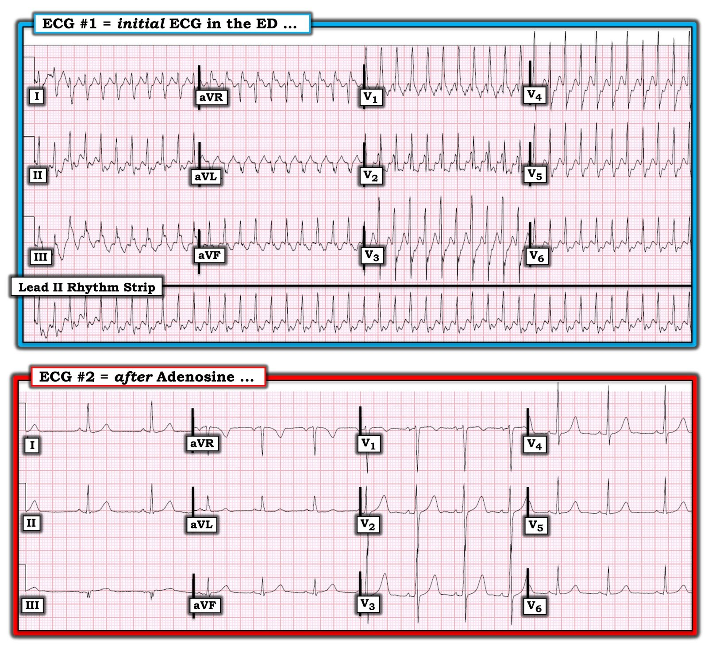
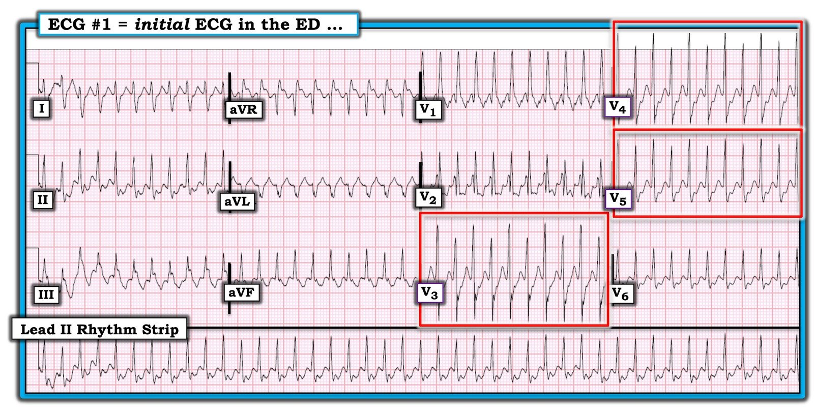

07/09/2020 — Nam thanh niên có tần số tim 257. Đó là gì và xử trí thế nào?
Bản dịch tiếng Việt của bài "Young Man with a Heart Rate of 257. What is it and how to manage?" – Dr. Smith’s ECG Blog. Giữ nguyên toàn bộ 7 hình ảnh của bản gốc.
Một bệnh nhân nam 30 mấy tuổi đến khoa cấp cứu (ED) vì một chấn thương nhẹ thì được phát hiện có tần số tim nhanh. Anh thừa nhận có hồi hộp đánh trống ngực, nhưng chỉ khi được hỏi. Anh có tiền sử uống nhiều rượu. Huyết áp bình thường (109/83).
Đây là điện tâm đồ 12 chuyển đạo của anh:


Chẩn đoán phân biệt gồm:
SVT kèm dẫn truyền lệch hướng(#)
[AVNRT so với WPW (còn gọi là AVRT*)]
Cuồng nhĩ dẫn truyền 1:1, kèm dẫn truyền lệch hướng
VT xuất phát từ phân nhánh trước (VT phân nhánh (fascicular VT))@
*AVRT = nhịp nhanh vào lại nhĩ thất (AV Reciprocating Tachycardia) (Vòng nhịp nhanh sử dụng cả nút AV lẫn một đường phụ. Tùy theo đường phụ dẫn truyền một chiều hay hai chiều, xung động có thể đi xuống qua nút AV rồi đi ngược lên qua đường phụ (xuôi chiều), hoặc đi xuống qua đường phụ rồi đi ngược lên qua nút AV (ngược chiều).
#Dẫn truyền lệch hướng có nghĩa là xung động xuất phát từ (AVNRT) hoặc đi qua (AVRT xuôi chiều) nút AV quá nhanh, không đủ thời gian cho tất cả các sợi dẫn truyền tái cực. Trong ca này, nhánh phải và phân nhánh sau không thể tái cực, nhưng phân nhánh trước thì có. Xung động đi qua phân nhánh trước (trái) (nằm ở phía trên) rồi từ vị trí trên-trái này đi qua các sợi không dẫn truyền tới phía dưới và bên phải. Vì vậy phần sau của QRS hướng sang phải và xuống dưới (hình dạng RBBB và trục hướng sang phải, xuống dưới).
@Đọc thêm về VT phân nhánh tại đây:
Idiopathic Ventricular Tachycardias for the EM Physician (Nhịp nhanh thất vô căn dành cho bác sĩ cấp cứu)
Ca bệnh tiếp diễn
Bệnh nhân hoàn toàn ổn định, vì vậy được cho adenosine.
Kết quả là chuyển về nhịp xoang:


Ngoài lề: Giờ đây khi đã biết nhịp này chuyển được bằng adenosine, chẩn đoán phân biệt được thu hẹp lại. Xem Điểm cần học 1 bên dưới.
Ca bệnh tiếp diễn
Bệnh nhân tái phát nhịp nhanh. Điều này khẳng định SVT, hoặc AVNRT hoặc WPW. VT đường ra thất phải cũng chuyển nhịp được bằng adenosine, và cũng có trục hướng xuống dưới, nhưng nó không có hình dạng blốc nhánh phải
Bệnh nhân được cho adenosine lần nữa.
Bạn nghĩ gì về cách xử trí này?
Bình luận về xử trí: Nếu adenosine chuyển được nhịp, rồi bệnh nhân tái phát, thì dùng lại adenosine mà không kèm một biện pháp điều trị nào khác để ngăn tái phát là vô ích. Adenosine có thời gian bán thải rất ngắn. Bệnh nhân này đã cho thấy anh ta sẽ quay lại SVT khi adenosine hết tác dụng.
Các lựa chọn xử trí SVT liên tục tái phát gồm nhiều loại:
1) ức chế nút AV tác dụng kéo dài hơn (thường dùng nhất là thuốc chẹn kênh calci, nhưng cũng có thể là thuốc chẹn beta)
2) ức chế các PAC khởi phát SVT (thuốc chẹn beta, vốn cũng ức chế nút AV)
3) Ngoài ra, một thuốc chống loạn nhịp nhóm 1a (như procainamide) để làm chậm quá trình khử cực cũng có thể hiệu quả.
Trước tiên: thử cho 2-4 g magnesi, rồi dùng lại adenosine.
Tiếp theo: thử verapamil, thuốc này chuyển nhịp hiệu quả không kém adenosine nhưng có thời gian tác dụng dài hơn nhiều nên sẽ duy trì được nhịp xoang.
Không bao giờ cho verapamil ở người có chức năng thất trái kém.
Liều dùng:
Verapamil
Liều 2,5-5 mg tiêm tĩnh mạch trong 2 phút (trong 3 phút ở bệnh nhân cao tuổi).
Liều tiếp theo 5-10 mg (0,15 mg/kg) tiêm tĩnh mạch sau 15-30 phút nếu SVT vẫn còn và không có phản ứng bất lợi. Liều tối đa là 20-30 mg. Có thể tiếp nối bằng truyền tĩnh mạch 0,005 mg/kg/phút.
Diltiazem
Liều 0,25 mg/kg tiêm tĩnh mạch trong 2 phút.
Cho liều tiếp theo 0,35 mg/kg tiêm tĩnh mạch nếu không thấy đáp ứng và không có biến cố bất lợi đáng kể do thuốc.
Truyền tĩnh mạch 5-15 mg/giờ
Các lựa chọn khác gồm thuốc chẹn beta.
Ca bệnh tiếp diễn:
Adenosine được cho lần nữa và bệnh nhân chuyển nhịp, rồi lại tái phát.
Bệnh nhân được sốc điện chuyển nhịp, rồi lại tái phát.
Bệnh nhân được sốc điện chuyển nhịp lần nữa, rồi lại tái phát.
Magnesi và procainamide được cho và bệnh nhân không tái phát.
Procainamide là một giải pháp hợp lý khác cho vấn đề này. Thuốc không ức chế nút AV nhưng làm chậm pha 0 của khử cực, điều này cũng thường cắt được vòng vào lại. Trong nghiên cứu ở trẻ em này, thuốc thành công 71% và tốt hơn amiodarone.
https://www.ahajournals.org/doi/full/10.1161/CIRCEP.109.901629 (nghiên cứu về procainamide so với amiodarone trong nhịp nhanh trên thất ở trẻ em, tạp chí Circulation: Arrhythmia and Electrophysiology)
Ngoài lề về procainamide: thuốc còn có lợi ích rất lý thuyết là không ức chế nút AV nếu đây là WPW có đường phụ dẫn truyền xuôi dòng VÀ bệnh nhân chuyển sang rung nhĩ. Việc chúng ta không thấy sóng delta trên điện tâm đồ 12 chuyển đạo là bằng chứng tốt rằng, nếu có đường phụ, nó không dẫn truyền theo hướng xuôi dòng.]
Theo dõi
Hỏi bệnh sử về sau cho thấy anh đã có các cơn hồi hộp đánh trống ngực với tần số thất nhanh trong vài năm, khoảng 2 cơn mỗi năm. Các cơn này bắt đầu bằng nhịp nhanh khởi phát đột ngột. Anh không chắc nhịp của mình đều hay không và không chắc về tần số, nhưng cho rằng nó “cực kỳ nhanh và như thể tim đang đập ở cổ tôi”.
Phần lớn các lần, anh nghĩ đó là những cơn hoảng loạn và chỉ cố gắng thư giãn để cơn qua đi. Các cơn thường kéo dài khoảng 1-2 giờ.
Bệnh nhân được phát hiện có đường phụ sau vách “ẩn” (WPW không có sóng delta), được xác nhận có SVT khi thăm dò điện sinh lý (EP) và đã được triệt đốt.
Đây là ghi chú của bác sĩ điện sinh lý:
“Chỉ triệt đốt được 1 điểm bám của đường phụ, điểm thứ hai nằm sâu trong xoang vành (CS) không thể triệt đốt được dù dùng công suất cao. Sau đó không còn gây được SVT bền bỉ.”
“Do có một số khó khăn khi điều khiển ống thông, và vì đã ghi nhận đường phụ trong thăm dò điện sinh lý, cần loại trừ bất kỳ bất thường cấu trúc nào có thể đi kèm đường phụ, như dị tật Ebstein. Tôi đã chỉ định siêu âm tim, sẽ được làm trong hôm nay, sau đó bệnh nhân có thể xuất viện về nhà và tái khám sau 2 đến 3 tháng.”
Siêu âm tim bình thường.
Những điểm cần học
1. Trong nhịp nhanh QRS rộng đều này, vì nhịp đã chuyển được bằng adenosine, gần như chắc chắn đây là SVT kèm dẫn truyền lệch hướng, có thể là:
A. AVNRT kèm dẫn truyền lệch hướng, hoặc
B. Nhịp nhanh vào lại nhĩ thất xuôi chiều (WPW), cũng kèm dẫn truyền lệch hướng
Bạn cũng có thể cân nhắc những chẩn đoán sau, nhưng chúng không phù hợp:
B. Nhịp nhanh vào lại nhĩ thất ngược chiều (WPW) — rất ít khả năng xét theo hình dạng
C. Nhịp nhanh đường ra thất phải (nhưng nhịp này sẽ có hình dạng LBBB — nên đây không phải RVOT)
2. Nếu nhịp chuyển được rồi lại tái phát nhịp nhanh khi dùng adenosine hoặc sốc điện, thì không nên thử lại phương thức nào trong hai phương thức đó cho đến khi đã cho một giải pháp dược lý tác dụng kéo dài hơn.
3. WPW không phải lúc nào cũng có sóng delta trên điện tâm đồ nền. Hiện tượng này được gọi là “dẫn truyền ẩn”. Nó có thể xảy ra vì đường phụ chỉ dẫn truyền được theo hướng ngược dòng (do đó là SVT xuôi chiều). Nó cũng có thể xảy ra nếu đường phụ nằm quá xa nút xoang đến mức xung động đã đi qua nút AV trước khi kịp tiền kích thích qua đường phụ (bypass tract).
4. Nhiều người trải nghiệm SVT như một “cơn hoảng loạn”. (xem bên dưới: SVT bị chẩn đoán nhầm thành rối loạn hoảng sợ)
5. Nút AV ở người trẻ đôi khi có thể dẫn truyền với tần số cực nhanh. Trong ca này, nút AV đã dẫn truyền được với tần số 257 (đi xuống qua nút AV, rồi đi ngược lên qua đường phụ)
6. Các rối loạn nhịp nhanh này nhanh đến mức có thể thoái biến thành rung thất. Luôn có chỉ định nhập viện và chuyển khám chuyên khoa điện sinh lý.
SVT bị chẩn đoán nhầm thành rối loạn hoảng sợ
Lessmeier TJ, Gamperling D, Johnson-Liddon V, và cs. Unrecognized paroxysmal supraventricular tachycardia. Potential for misdiagnosis as panic disorder. Arch Intern Med. 1997;157(5):537–543.
Lessmeier và cs. đã thực hiện một khảo sát hồi cứu trên 107 bệnh nhân có PSVT do vào lại và thấy 67% có triệu chứng thỏa mãn tiêu chuẩn DSM-IV về rối loạn hoảng sợ.※ Chỉ 48 (45%) bệnh nhân được chẩn đoán đúng ở lần đánh giá đầu tiên; 55% không được chẩn đoán trong trung bình 3,3 năm sau lần biểu hiện đầu tiên, trong đó có 13 bệnh nhân có tiền kích thích rõ trên điện tâm đồ lúc nghỉ. Ở một nửa số bệnh nhân này, các bác sĩ ban đầu quy triệu chứng cho “hoảng loạn, lo âu hoặc stress”, trong đó phụ nữ có nhiều khả năng hơn nam giới bị quy triệu chứng cho nguyên nhân tâm thần (65% so với 32%; P <.04).

===================================
BÌNH LUẬN CỦA TÔI, bởi KEN GRAUER, MD (7/9/2020):
===================================
Một ca thú vị với phần bàn luận kỹ lưỡng của Dr. Smith về xử trí rối loạn nhịp. Vì vậy — tôi sẽ chỉ giới hạn bình luận của mình ở một vài điểm bổ sung.
- Bệnh nhân trong ca hôm nay là một người đàn ông 30 mấy tuổi nhập viện vì chấn thương nhẹ. Bệnh nhân có tiền sử uống nhiều rượu. Anh có triệu chứng hồi hộp đánh trống ngực ở mức nhẹ — nhưng được đánh giá là hoàn toàn ổn định vào thời điểm ghi điện tâm đồ đầu tiên. Để cho rõ — tôi đã đặt 2 điện tâm đồ của ca hôm nay cạnh nhau trong Hình 1.


Xem xét điện tâm đồ #1: Như Dr. Smith đã nêu — chẩn đoán phân biệt của nhịp SVT cực kỳ nhanh (~255 lần/phút) thấy trong điện tâm đồ #1, trong đó không có dấu hiệu rõ ràng nào của hoạt động nhĩ — bao gồm: i) Một nhịp SVT do vào lại (tức là AVNRT so với AVRT xuôi chiều); ii) Cuồng nhĩ (AFlutter) dẫn truyền AV 1:1; và, iii) VT.
NẾU nhịp trong điện tâm đồ #1 là VT — thì gần như chắc chắn đó là một dạng VT vô căn — vì bệnh sử không có dấu hiệu nào cho thấy người đàn ông 30 mấy tuổi này có bệnh tim thiếu máu cục bộ nền. Vì vậy — đáng để điểm lại ngắn gọn thực thể VT “vô căn” này.
- Dr. Meyers, Dr. Smith và Dr. Weingart đã viết một bài tổng quan chi tiết về VT vô căn trong bài đăng ngày 14 tháng Chín năm 2018 của Dr. Smith’s ECG Blog.
- Bình luận của tôi ở cuối bài đăng ngày 14 tháng Chín năm 2018 này bổ sung một loạt ĐIỂM THEN CHỐT (PEARLS) theo “Quan điểm của tôi” về chủ đề này.
- Ở đây tôi bổ sung thêm 2 đường link tài liệu tham khảo về chủ đề này — của Brugada; Diez — và — của Tondo và cs..
VT Vô căn Là gì?
- Phần lớn các VT đều liên quan đến bệnh tim cấu trúc nền.
- ĐIỂM THEN CHỐT (PEARL) #1: Điều quan trọng cần nhớ là ~10% bệnh nhân biểu hiện VT không có bệnh tim thiếu máu cục bộ hay bệnh tim cấu trúc nền — cũng không có rối loạn chuyển hóa hay rối loạn điện giải — cũng không có QTc kéo dài. Tầm quan trọng của việc nhận ra những bệnh nhân VT vô căn (idiopathic VT) có tim bình thường về cấu trúc này — là ở chỗ biểu hiện, diễn biến lâm sàng, và cả xử trí ngắn hạn lẫn dài hạn đều khác biệt rất nhiều so với ~90% bệnh nhân có các dạng VT do thiếu máu cục bộ hoặc do bệnh tim cấu trúc “thông thường”.
- Mặc dù có những ngoại lệ — “tin tốt” về những bệnh nhân biểu hiện VT vô căn — là nhịp này nhìn chung gặp ở nhóm người trưởng thành trẻ tuổi hơn, ngoài ra vẫn khỏe mạnh (thường <40 tuổi). Tiên lượng dài hạn thường tốt đến bất ngờ! Hãy nghi ngờ một dạng VT vô căn khi một người trưởng thành trẻ tuổi không có bệnh mạch vành hay bệnh tim cấu trúc đã biết xuất hiện nhịp WCT (nhịp nhanh QRS rộng — Wide-Complex Tachycardia) đều trong lúc gắng sức hoặc hoạt động nặng nhọc khác — và dù vậy, có vẻ dung nạp nhịp WCT này tốt đến bất ngờ.
- Không phải mọi dạng VT vô căn đều dự đoán được dựa vào hình ảnh điện tâm đồ (Anderson và cs., 2019). Dù vậy — nhiều dạng thì dự đoán được, điều này quan trọng cho các cân nhắc xử trí vì (như Dr. Smith đã nêu ở trên) — Adenosine và/hoặc Verapamil có thể là điều trị được lựa chọn cho VT vô căn. Ngược lại, Adenosine và Verapamil là không nên dùng (nếu không muốn nói là chống chỉ định) để điều trị VT do thiếu máu cục bộ.
Cho đến nay, dạng VT vô căn thường gặp nhất là VT OT ( = VT đường ra — Outflow Tract VTs). Dạng VT vô căn thường gặp khác là VT phân nhánh (fascicular VT).
- Trong số các VT phân nhánh — loại thường gặp nhất cho đến nay (trên 90% trường hợp) là VT phân nhánh trái sau (Left Posterior Fascicular VT) — trong đó điện tâm đồ cho thấy hình ảnh RBBB/LAHB (VT thoát ra gần phân nhánh sau). Ít gặp hơn nhiều là VT phân nhánh trái trước (hình ảnh RBBB/LPHB) — và hiếm khi là VT phân nhánh vách (RBBB với trục bình thường).
- Trong số các VT OT — Sự chú ý nhiều nhất dành cho RVOT VT (VT đường ra thất phải — Right-Ventricular Outflow Tract VT) — vì RVOT VT chiếm ~80-90% tổng số VT OT.
- Nhưng trong ~10-20% trường hợp — có thể là LVOT VT (VT đường ra thất trái — Left-Ventricular Outflow Tract VT). Điều này cần được hiểu rõ, vì xử trí ban đầu VT OT (tức là, Adenosine, Verapamil) là tương tự nhau đối với RVOT và LVOT VT — nhưng cách nhận diện RVOT và LVOT trên điện tâm đồ thì khác nhau!
- RVOT VT thường khá dễ nhận ra trên điện tâm đồ — vì các chuyển đạo ngực cho thấy hình ảnh LBBB, với trục hướng xuống dưới ở các chuyển đạo chi (tức là, phức bộ QRS dương hơn nhiều ở các chuyển đạo thành dưới so với chuyển đạo I).
- LVOT VT có thể khó nhận ra hơn trên điện tâm đồ. Bạn cũng có thể thấy hình ảnh LBBB ở các chuyển đạo ngực với LVOT VT (cùng với trục hướng xuống dưới ở các chuyển đạo chi). Mặc dù có thể có nhiều biến thể phức tạp về hình dạng QRS (vượt xa phạm vi của chúng ta! — Anderson và cs., 2019) — đặc trưng của hình ảnh LBBB ở chuyển đạo ngực trong LVOT (để phân biệt với RVOT) — là vùng chuyển tiếp có xu hướng xuất hiện sớm hơn (tức là, ở V1-V2 với LVOT so với sau V3 hoặc V4 với RVOT).
- Lý do khác khiến việc nhận ra VT LVOT khó khăn như vậy — là đôi khi nó biểu hiện với hình ảnh RBBB ở các chuyển đạo ngực (dưới dạng sóng R rộng, nổi bật ở chuyển đạo V1,V2) + trục hướng xuống dưới ở các chuyển đạo chi. Hình ảnh này có thể giống dạng trái trước của VT phân nhánh.
ĐIỀU CỐT LÕI GIẢN LƯỢC: Việc dùng Adenosine ban đầu để điều trị một bệnh nhân trước đó khỏe mạnh, ổn định huyết động, biểu hiện VT được cho là vô căn là hoàn toàn phù hợp, và là một điều trị được lựa chọn. Adenosine đặc biệt có khả năng hiệu quả NẾU bệnh nhân có VT OT (tức là, hoặc RVOT hoặc LVOT). Dù vậy, thực tế lâm sàng là — bạn sẽ không phải lúc nào cũng nhận ra được, dựa vào hình ảnh điện tâm đồ, mọi dạng VT vô căn có khả năng đáp ứng với Adenosine.
- Verapamil tĩnh mạch (hoặc Diltiazem) là một phương án điều trị thay thế hiệu quả cho VT vô căn. Và, NẾU bạn biết rằng nhịp WCT quả thực là VT phân nhánh (fascicular VT) — thì Verapamil tĩnh mạch chính là thuốc được lựa chọn.
- Cần biết rằng có những báo cáo ca bệnh về việc Adenosine có hiệu quả với VT phân nhánh. Dù vậy — phần lớn trường hợp Adenosine sẽ không hiệu quả với nhịp này (Reviriego) — đó là lý do NẾU bạn đã biết nhịp WCT là VT phân nhánh, thì bạn có thể quyết định không bắt đầu điều trị bằng Adenosine.
- Điểm MẤU CHỐT: Không dùng Adenosine hay Verapamil/Diltiazem nếu bạn biết rằng nhịp WCT là VT do thiếu máu cục bộ. Các thuốc này không hiệu quả cho chỉ định này — và, nguy cơ tác dụng bất lợi tăng lên đáng kể (với nguy cơ thực sự chuyển thành rung thất (VFib) nếu dùng Verapamil/Diltiazem để điều trị VT do thiếu máu cục bộ).

ĐIỂM THEN CHỐT (PEARL) #2 — BẠN có thấy Điện thế Luân phiên (electrical alternans) ở điện tâm đồ #1 không? Hiện tượng điện thế luân phiên hấp dẫn nhưng không phổ biến này thường bị hiểu sai — và, nó thường bị bỏ sót khi thực sự xảy ra. Điện thế luân phiên có thể rất kín đáo.
- Mặc dù thường gặp nhất trong chèn ép tim — điện thế luân phiên cũng đã được ghi nhận liên quan đến ngày càng nhiều tình trạng lâm sàng khác.
- Ở dạng đơn giản nhất — điện thế luân phiên là sự thay đổi theo từng nhát ở một hoặc nhiều phần bất kỳ của bản ghi điện tâm đồ. Nó có thể xảy ra cách một nhát — hoặc theo một tỷ lệ lặp lại khác (3:1; 4:1; v.v.). Biên độ hoặc hướng của sóng P, phức bộ QRS, đoạn ST và/hoặc sóng T đều có thể bị ảnh hưởng. Cũng có thể thấy thời khoảng luân phiên (của khoảng PR, QRS hoặc QT).
- LƯU Ý: Có 3 trong 12 chuyển đạo ở điện tâm đồ #1 cho thấy bằng chứng rõ ràng của điện thế luân phiên. Để dễ nhận ra — tôi đã khoanh 3 chuyển đạo này trong một hình chữ nhật MÀU ĐỎ ở Hình 2. Chẳng phải giờ đây sự luân phiên cách một nhát của biên độ sóng R đã rõ ràng ở chuyển đạo V3, V4 và V5 sao? Kín đáo hơn, nhưng vẫn dễ nhận ra — là sự luân phiên cách một nhát của biên độ sóng T thấy ở chuyển đạo V3 và V4 trong Hình 2.
- Ngoài chèn ép tim — một trong những nhận định hữu ích nhất mà việc nhận ra điện thế luân phiên mang lại, là nó gợi ý một cơ chế vào lại cho một nhịp SVT đều. Trong bối cảnh này — QRS luân phiên trong một nhịp SVT đều (như chúng ta thấy ở Hình 2) thường cho thấy dẫn truyền ngược dòng qua một AP (đường phụ — Accessory Pathway). Dù vậy — vì QRS luân phiên đôi khi cũng có thể gặp trong AVNRT đơn thuần (trong đó đường vào lại nằm hoàn toàn bên trong nút AV) — việc nhận ra dạng điện thế luân phiên này không chứng minh sự tồn tại của một AP tham gia — nhưng nó có tính gợi ý. (Và, một SVT vào lại có AP tham gia đã được phát hiện ở ca hôm nay!).
ĐIỀU CỐT LÕI GIẢN LƯỢC: Ngay cả khi việc nhận ra điện thế luân phiên trong một SVT đều không chứng minh sự tồn tại của một AP tham gia — việc biết rằng cơ chế của SVT này gần như chắc chắn là vào lại có thể giúp ích cho việc ra quyết định lâm sàng về cách xử trí tối ưu. Ở ca hôm nay — Việc nhận ra điện thế luân phiên cung cấp thêm một lý do nữa ủng hộ việc thử Adenosine trước tiên.
- LƯU Ý #1: Mặc dù không phổ biến — Cần biết rằng điện thế luân phiên đôi khi có thể gặp với VT đơn dạng.
- LƯU Ý #2: Trong danh sách các Tình trạng lâm sàng khác mà điện thế luân phiên đã được mô tả có: — hội chứng QT dài — rối loạn điện giải nặng (Ca++ thấp; K+/Mg++ thấp) — bệnh cơ tim do rượu hoặc bệnh cơ tim phì đại — PE cấp — xuất huyết dưới nhện — ngừng tim hoặc giai đoạn sau hồi sức — và các dạng thiếu máu cục bộ khác nhau (tự phát hoặc do gắng sức gây ra; rối loạn chức năng thất trái nặng).
- LƯU Ý #3: Trong bối cảnh QTc dài hoặc thiếu máu cục bộ — dấu hiệu luân phiên đoạn ST và/hoặc sóng T có thể dự báo sự xuất hiện của rối loạn nhịp thất ác tính.
- Để biết THÊM về Điện thế luân phiên — BẤM VÀO ĐÂY.
T.B. (P.S.): Cách TỐT NHẤT để không bỏ sót điện thế luân phiên — là nhớ TÌM nó mỗi khi bạn gặp một nhịp nhanh QRS hẹp hoặc rộng đều có căn nguyên chưa rõ. Làm như vậy có thể cung cấp một manh mối quan trọng về căn nguyên của nhịp.

